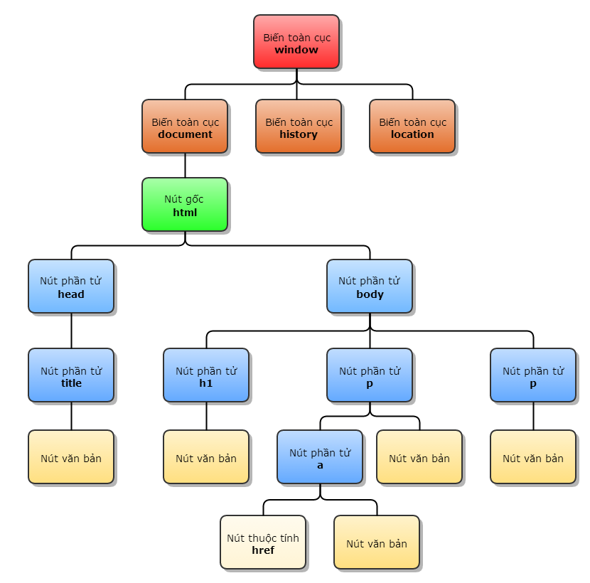

TÀI LIỆU VỀ jQuery - bấm vào để tải !
1.jQuery là gì ? có ăn được không và ăn có ngon không ?
Trả lời : jQuery là 1 thư viện (Lib/Framework) được xây dựng trên javascript với mục tiêu "nói ít làm nhiều"( Write less/Do more!).
jQuery ko ăn được nhưng rất ngon :3 , nó giúp ta đỡ đau đớn hơn khi code javascript-tức là giúp tiết kiệm thời gian và đỡ phải "hack não" trong khi code nhưng vẫn thực hiện được rất nhiều việc!,giải quyết được vấn đề mỗi trình duyệt thực hiện javascript 1 kiểu khác nhau . NÓI CHUNG,CÁI NÀY MẠNH MẼ, DỄ HỌC,CROSS-BROWSERS!
bạn có thể tìm hiểu thêm về jQuery trong trang chủ : jQuery.com
II.Cài đặt jQuery
1. hướng dẫn cài đặt:
download jQuery tại trang chủ hoặc tại ĐÂY - tải về sau đó giải nén ra ta được file jquery.js2. cài đặt :
nhúng file vừa tải vào đầu phần thẻheadertrong html :
<script type=”text/javascript” src=”Link của file javascript”></script>
ví dụ jQuery đầu tiên :
// jQuery luôn bắt đầu bằng :
$(document).ready(function(){
})
// sử dụng để ngăn jquery chạy trước khi trang html được load xong =>
//tránh gây lỗi
>
III.Căn bản jQuery :

cũng như CSS , nếu chúng ta giả muốn chọn phần tử "nút văn bản 1 " thì có thể chọn như sau :
$(document).ready(function(){
$("window document html head body p ").addClass("red");
})
//chuyển tất cả tag p nằm trong thẻ body thành màu đỏ
//(class red phải định dạng bằng CSS trước)
// TẤT NHIÊN LÀ CHÚNG TA CHẲNG BAO GIỜ CẦN DÙNG CÁI CÁCH DẪN LOẰNG NGOẰNG THẾ
// chỉ cần :
$("p").addClass("red");
// là xong
bấm vào đây để tìm hiểu thêm về cách jQuery di chuyển trong DOM
2.bộ chọn trong jQ :
$(document).ready(function(){
$("#button").click(function(){
$("p").hide();
})
})
// ẩn tất cả các thẻ p ở trên
Giải thích : chúng ta bảo jQuery rằng : êku,tìm cho anh thằng nào có id="button" (dấu # là id , dấu . là class giống CSS)rồi sau đó bảo nó : "bao giờ người dùng ấn vào chú [ sự kiện
.click()] thì chú phải chạy cái function ở dưới cho anh!"
function ở dưới cũng tương tự,tìm những thẻ p sau đó ẩn nó đi
3. 1 số code hay dùng :
.f-nav{
z-index: 9999;
position: fixed;
top: 0;
width: 100%;
}
/* làm menu của bám chặt vào đoạn đầu của cửa sổ trình duyệt
*/
Điểm mạnh của Javascript cũng như JQuery là hệ thống plugin rất nhiều, có thể sử dụng dùng làm nhiều mục đích, trong ví dụ này chúng ta sẽ demo 2 plugin slides ảnh.
Lưu ý: mỗi plugin có cách tích hợp vào là khác nhau, nên muốn sử dụng được phải đọc ví dụ trên trang chủ của chúng
Tích hợp lightbox2, theo link: link: http://lokeshdhakar.com/projects/lightbox2/
hướng dẫn chung tích hợp: đầu tiên là tải nó về -> gỉai nén ra, nhét tất cả vào folder lightbox2 ( tên plugin luôn), tạo 1 folder vendor(ngang hàng với folder js), nhét lightbox2 trong folder vendor đó-> tiến hành nhúng css của nó và js của nó vào -> làm theo hd dưới đây -> ok
*Lưu ý: Folder vendor là nơi sẽ chứa các plugin mà mình tải về để đễ quản lí hơn
sau khi nhúng 2 file: lightbox.min.js và lightbox.min.css ( file có đuôi .min là những file đã được nén gỉam dung lượng -> tải ưeb nhanh hơn )
<a href="duong-dan-toi-file-anh" data-lightbox="tên file ảnh">
<img src="đường dẫn tới file ảnh" alt="image-1" />
</a>
OK, Thế nếu chúng ta muốn làm 1 chuỗi các slides( tức là kiểu như có 1 bộ sưu tập ảnh trong 1 album ý :) ) thì sao?
làm như này, chỉ cần đặt gía trị data-lightbox='Cùng tên' là dc
<a href="duong-dan-toi-file-anh" data-lightbox="tên album, nhớ để giống nhau" data-title="tiêu đề 1 ">
<img src="đường dẫn tới file ảnh 1" alt="image-1" />
</a>
<a href="duong-dan-toi-file-anh" data-lightbox="tên album, nhớ để giống nhau" data-title="tiêu đề 2 ">
<img src="đường dẫn tới file ảnh 2" alt="image-2" />
</a>
<a href="duong-dan-toi-file-anh" data-lightbox="tên album, nhớ để giống nhau" data-title="tiêu đề 3 ">
<img src="đường dẫn tới file ảnh 3" alt="image-3" />
</a>
Kết quả sẽ giống cái A Four Image Set trong demo ý :)
Mở rộng: Tìm cách tích hợp thằng này vào thành slider ảnh nhé: http://kenwheeler.github.io/slick/, đây là 1 slider rất đẹp, anh toàn dùng trong dự án( với cả cái lightox2 cũng hay dùng nữa )
//show alert
$.alert({
title: 'Alert!',
content: 'auto alert, cái này dùng như alert() của js !',
});
//show user confirm:
$.confirm({
title: 'confirm !',
content: 'Confirm :v ',
buttons: {
confirm: function () { // hàm này chạy khi usser đã ấn confirm
$.alert('ok, mày đã xác nhận !'); //show alert là đã xác nhận
},
cancel: function () {
$.alert('đã hủy!');
}
}
});
//show 1 dialog thông báo gì đó
$.dialog({
title: 'Thông báo !',
content: 'Thông báo trả tiền điện, tiền mạng :V !',
});
// ^^^ Tất cả các hành động trên sẽ chạy khi trình duyệt tải xong web, vậy nếu muốn thêm action khi 1 cái nút dc bấm mới hiện thì sao ?
//gắn sự kiện cho nút là xong
$( "Tìm tới cái nút" ).on("click" , function(){
$.alert({
title: 'Alert!',
content: 'auto alert, cái này dùng như alert() của js !',
});
});
$("#btn18").on("click" , function(){
$.confirm({
title: 'Prompt!',
content: '' +
'<form action="" class="formName">' +
'<div class="form-group">' +
'<label>Bạn đã đủ 18+ ? </label>' +
'<img src="img/fbi.jpg" style="max-width:100%; display:block; width:auto" />' +
'</div>' +
'</form>',
buttons: {
formSubmit: {
text: 'OK',
btnClass: 'btn-blue',
action: function () {
$.alert('Ok, vào đi ! ');
}
},
cancel: function () {
$.alert("Bạn ko nên vào đây vì chưa đủ 18 -_- ");
},
}
});
});